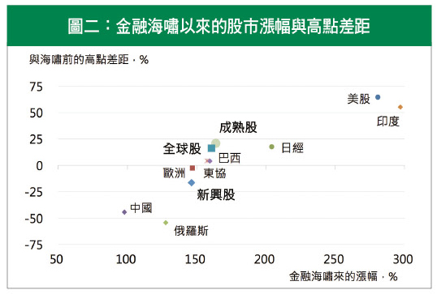
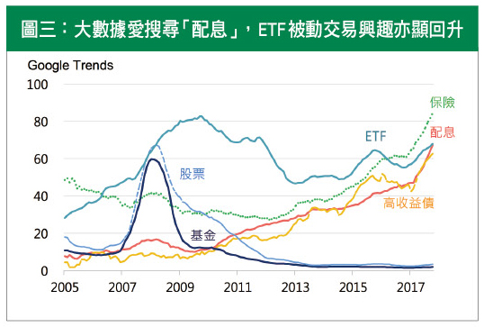

海嘯後的政策榮景推升，投資人對風險的擔憂趨避，透露多頭行情未完待續
今年金融市場多頭氣盛，各國領導無不積極主政高呼，政策希望煙火熱鬧，股市歷史顛峰造極之時，習慣徜徉小確幸的台灣投資人，荷包是否也飽飽？當景氣復甦基本面對應投資行動面，行為經濟學的分歧，傳達投資面向的啟示，將是有趣的探究。
福爾摩沙「息」慣性，尋寶青睞債鍾情
根據主計總處資料顯示，我國超額儲蓄總額高達新台幣十一兆，同時超額儲蓄率也連五年超過一成。國人財富管理的配置，以儲蓄定存為主，包括保險、債券等類定存商品。二○○八年以來，保險需求更明顯攀升，平均投保覆蓋率二四○％，較海嘯前增幅達四成以上，證券投資則不到二成增長，透露大眾重視保本投資為主。
從台灣投資境外基金的偏好來看，持有標的明顯集中於債券，配置比例超過六成以上，股票則不及四成。對應於今年股債表現，股票市場表現搶眼，新興市場漲幅逼近三成，遠高於債市的六到十％報酬，但資金動向則幾乎呈現一面倒，仍是以溫穩的投資選項為主，今年來新興債規模增幅最大，強調多元資產的平衡型亦近三成增長，明顯存在尋息投資慣性。反觀股票型基金，即使景氣熱絡，整體股票基金申贖反呈現淨流出，凸顯投資人仍戒慎恐懼的心態 (見圖一)。

資料來源：Bloomberg，TDCC，台灣投資人比重為季統計資料。
一朝被蛇咬的心理壓力，強化厭惡損失的風險趨避
投資想法化為行動，除了基本面嚴謹的理性分析，大腦對於資訊組成的宰制，將不只是金融學，還包括心理層面非單純理性的解釋。如同行為經濟學之父理查．塞勒所提出的稟賦效應 (Endowment effect)，人性傾向更看重已擁有物品價值，恐懼輸者的心理陰影，強化了損失厭惡的風險趨避，從而限縮理性的思考判斷，這也解釋了即使面對難得的牛市大漲，主張配息的債券商品仍為資金依歸。
金融海嘯以來，美股自二○○九年低點上揚二八○％，成熟股超越海嘯前高點，新興股亦多翻倍 (見圖二)。相對全球資金熱火，追蹤超過十二年來的大數據趨勢，「配息」仍為市場熱搜的關鍵字，保單與高收益債詢問度居高不下，風險性投資的搜尋偏冷，顯現這波大多頭隱含曾經慘跌的創傷記憶猶存。有趣的是，被動式操作的指數型ETF則持續增溫，除了交易成本偏低優勢，使其蓬勃發展，也透露投資人傾向規避主動風險，避免承擔過高的損失不確定性 (見圖三)。

資料來源：Bloomberg，截至2017年10月20日收盤價。

資料來源：Google Trends，過去12個月平均月統計搜尋關鍵字統計。
跳脫稟賦行動思維，聚焦政策復甦引擎「股」推力
美國這波景氣擴張已達八年，是歷史第二長的多頭行情。受惠於各國央行厲行量化寬鬆的資金推使，景氣復甦穩中向上，川普狂人新局，歐洲選舉復興，新興改革推動預期，政治維穩引導，積極減稅、擴大建設等財政引擎推動，國際貨幣基金(IMF)預估今明兩年全球經濟成長率達三．六％，新興國家亦有五％年增動能，企業信心正向，全球經濟預期仍將維持復甦。
回顧年初，投資人對於政經風險的過度擔憂，包括英脫歐不確定性、川普保護主義、中國信貸問題與央行政策動向，目前多朝穩定循序發展，市場也就在半信半疑中驚驚漲升。強者恆強的股市新高，面對資金過於保守、有限理性的投資行為誤置 (Misbehaving)，隱含未來高點仍有空間。現今美國稅改財政擴張前進，中國十九大後的穩定正向，新興內需與外貿復甦發展，政治政策強帶動啟發，都有利推升企業獲利增長，多頭動能預將延續。投資尋寶的您，若可適度跳脫心理框架，擇機承擔風險布局，駕馭波動智慧，贏家的冒險致勝，將豐碩可期！
【揭露事項與免責聲明】
本報告為國泰世華銀行（下稱“本公司”）提供尊貴理財客戶之參考資料，並非針對特定客戶所作的投資建議，且在本報告撰寫過程中，並未考量讀者個別的財務狀況與需求，故本報告所提供的資訊無法適用於所有讀者。
本報告係根據本公司所取得的資訊加以彙集及研究分析，本公司並不保證各項資訊之完整性及正確性。本報告中所提出之意見係為本報告出版當時的意見，邇後相關資訊或意見若有變更，本公司將不會另行通知。本公司亦無義務持續更新本報告之內容或追蹤研究本報告所涵蓋之主題。本報告中提及的標的價格、價值及收益隨時可能因各種本公司無法控制之政治、經濟、市場等因素而產生變化。本報告中之各項預測，均係基於對目前所得資訊作合理假設下所完成，所以並不必然實現。本報告不得視為買賣有價證券或其他金融商品的要約或要約之引誘。
國泰金融集團（下稱“本集團”）所屬各公司可能個別基於特定目的且針對特定人士出具研究報告、提供口頭或書面的市場看法或投資建議（下稱“提供資訊”），鑑於提供資訊之單位、時間、對象及目的不同，本報告與本集團其他單位所提供資訊可能有不一致或相牴觸之情事；本集團所屬公司從事各項金融業務，包括但不限於銀行、保險、證券經紀、承銷、自有資金投資、資產管理、證券投資信託等。本集團各公司對於本報告所涵蓋之標的可能有投資或其他業務往來關係，各公司從事交易之方向亦可能與本報告不一致，讀者應審慎評估自身投資風險，自行決定投資方針，不應以前述不一致或相抵觸為由，主張本公司或本集團其他成員有侵害讀者權益之情事。